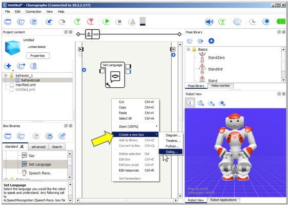
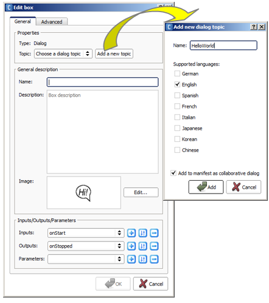
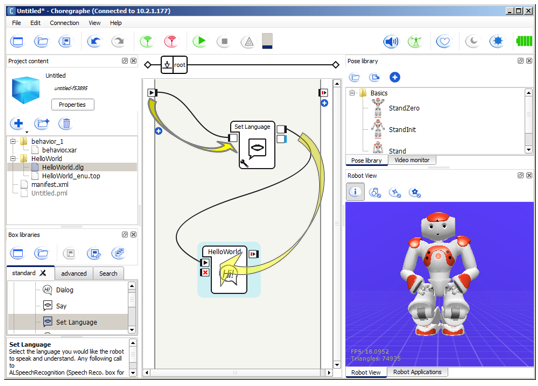
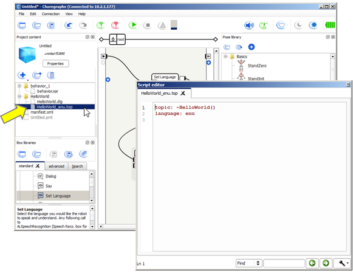
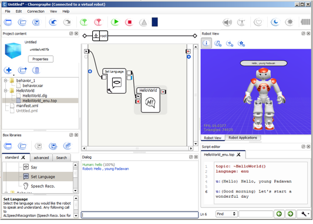
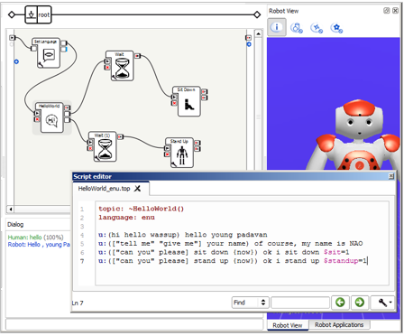
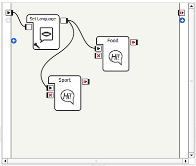

Creating Dialog boxes¶
See also: QiChat
This tutorial starts like the Hello World 3 - using Dialog topic in Choregraphe tutorial, then goes deeper in mastering Dialog boxes and QiChat scripting.
1 - Hello World¶
| Step | Action |
|---|---|
| Start Choregraphe. | |
Drag the Speech > Speech Settings > Set Language box on the grey area. Click the |
|
Right click the grey area and choose, in the contextual menu, Create a new Box > Dialog....  |
|
Click the Add a new topic button, then type a name without spaces, for example: HelloWorld. Click the Add button, then the OK button.  |
|
Create links as below.  |
|
In the Project content, double click the HelloWorld_enu.top file. The Script editor appears.  |
|
Type those rules: u:(Hello) Hello, young Padawan
u:(Good morning) Let's start a wonderful day
|
 parameter button and set
the language as English.
parameter button and set
the language as English.{kind=link}
{kind=link}
{kind=link}
{kind=link}
{kind=link}
{kind=link}
Testing on a simulated robot¶
| Step | Action |
|---|---|
Make sure you are connected on a virtual robot. For further details, see: How to connect Choregraphe to a simulated robot. |
|
Click the  Play button. Play button. |
|
In the Dialog panel, enter “Hello” and press Enter. You can see the result both in Dialog panel and in the Robot view.  |
{kind=link}
Testing on a real robot¶
| Step | Action |
|---|---|
Make sure you are connected on a real robot. For further details, see: How to connect Choregraphe to a robot. |
|
| Click the Play button. |
|
Wait for the signal indicating that the robot is listening:
|
|
Say “Hello”. The robot says “hello young padavan”. You can also see the result both in Dialog panel and in the Robot view. |
2 - “Hi”, “Hello”... in one rule¶
| Step | Action |
|---|---|
To make your first rule a little bit more complex, enrich your script: u:([hi hello wassup]) hello young padawan
u:(["tell me" "give me"] your name) of course, my name is NAO
|
{kind=link}
To go further, see: Delimiters.
3 - Connecting QiChat script and animations¶
| Step | Action |
|---|---|
Add these new rules: u:(["can you" please] sit down {now}) ok i sit down $sit=1
u:(["can you" please] stand up {now}) ok i stand up $standup=1
|
|
Add two outputs to the Hello world box.
For further details, see: How to add/remove inputs, outputs, parameters in a box. Note: here we use Bang type, an easy way to propagate an event. If you need a typed variable, see: Sending QiChat variable through box output. |
|
| Add two Programming > Time > Wait boxes and connect them to the outputs you have created. | |
Add and connect a Movement > Posture > Sit Down and a Movement > Posture > Stand Up boxes.  |
{kind=link}
{kind=link}
To go further, see: Variables and events.
4 - Jumping from one topic to another¶
| Step | Action |
|---|---|
| In a new Project, add an Speech > Speech Settings > Set Language box. | |
Create two different Dialog topic boxes, called Food and Sport with the following content: topic: ~Food()
language: enu
u:(let's talk about food) OK, guess what I like
u:^private(do you like fish) yes and sea food too
u:^private(do you like meat) no, I don't
topic: ~Sport()
language: enu
u:(let's talk about sport) OK, guess what sport I like
u:^private(do you like tennis) no, I can't play tennis
u:^private(do you like yoga) yes, would you like to do yoga with me?
|
|
Link the tree boxes as follows:  |
|
Test it. To jump from a topic to another and give it the focus, use the one of their user rules: In our example : “Let’s talk about food” or “Let’s talk about sport”. Once a topic (food or sport) has the focus:
|
{kind=link}
To go further, see: Activated / deactivated.
Advanced tips¶
Sending QiChat variable through box output¶
Be aware: in QiChat, a variable has no defined type.
Workaround:
Use a Bang Output if you are just looking for sending a signal to another box.
Use a Dynamic Output, if you want to use the value of the variable in another box; then cast it into the type you want in your box script:
def onInput_dyn(self, p): try: p = int(p) except ValueError: # If p is a string you may have an exception. pass
To go further¶
You can enrich the dialog with other, more complex rules.
To go further see: QiChat - Syntax.